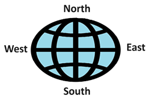
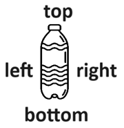
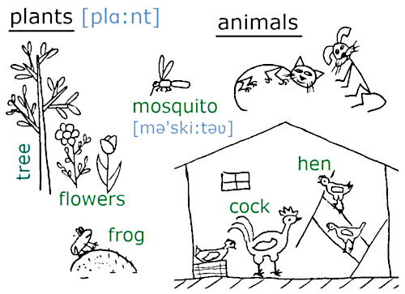

HomeIndex
HomeIndex GitHub
</>
GitHub
</>
Лексика тематическая
I'm sorry. — Простите/извините. Используется после причинения неудобства, а также при соболезновании. sorry — буквально сожалеющий.
— My dog died yesterday. — Моя собака вчера умерла.
— I'm sorry. — Мне очень жаль.
Excuse me — извините (используется перед причинением неудобства).
Excuse me, can you give me your pen please? — Извините, можете дать мне свою ручку.
Don't you mind if I sit here? — Вы не возражаете, если я сяду здесь?
Thank you, it's very kind of you. — Спасибо, это очень мило с вашей стороны.
Can/could you, please speak a little bit slower. — Не могли бы вы говорить немного медленнее?
 
north — север
south — юг
west — запад
east — восток
top — верх
bottom — низ
left — лево
right — право
| Слово | Перевод | Пример | Перевод примера |
|---|---|---|---|
| now | сейчас | I'm busy now. | Я сейчас занят. |
| then | тогда | Then I had lunch but now I can help you. | Тогда я обедал, но сейчас могу тебе помочь. |
| then | затем | First wash your hands and then eat your food. | Сначала вымой руки, потом кушай. |
| before | до | Come before five o'clock. | Приходите до пяти часов. |
| after | после | After Sunday comes Monday. | За воскресеньем следует понедельник. |
| previous | предыдущий | My previous job was hard. | Моя предыдущая работа была трудная. |
| next | следующий | The next week will be warmer than the current one. | Следующая неделя будет теплее, чем текущая. |
| current | текущий | My current job is pleasant and interesting. | Моя нынешняя работа приятная и интересная. |
| in | через (интервал времени) | The fast train will arrive in ten minutes. | Скорый поезд придет через 10 минут. |
(The) next time — в следующий раз
(The) last time — в прошлый раз
all days long — все дни напролет
Ограничение по условию
till — пока, до того как
He didn't manage to reached home till the rain started. — Ему не удалось добраться домой, до того как пошёл дождь.
until — пока не
Fake it until you make it. — Притворяйся, пока не получится. (Фраза, означающая имитацию уверенности с расчётом на то, что в случае успеха уверенность станет подлинной.)
since — с тех пор, от ...
since yesterday — со вчерашнего дня
I have been here (ever) since five o'clock. — Я здесь с пяти часов.
From three to five o'clock I will rest. — С трех до пяти часов я буду отдыхать.
in the morning — утром
at noon — в полдень
in the afternoon — днем (во второй половине дня)
in the evening — вечером
at night — ночью
at midnight — в полночь
What's the time? — Сколько времени?
It's nine twenty five — девять двадцать пять (должно быть понятно из контекста утра или вечера).
Обозначение времени различается на дневное AM [,eı'em] и вечернее PM.
It's 10:15 AM (ten fifteen) — 10:15 утра
It's 10:30 PM (ten thirty) — 10:30 вечера
Ten forty-five — 10:45
Quarter ['kwɔ:tə] past ten — четверть одиннадцатого
Half [hɑ:f] past ten — половина одиннадцатого (после десяти)
Quarter to eleven — без пятнадцати одиннадцать
Today I had my breakfast at about 9:30. — Сегодня я обедала примерно в 9:30.
Особые случаи:
12:30 PM — 12:30 дня
12:30 AM — половина первого ночи
— What is the date today? — Какая сегодня дата?
— Today is the fifth of April. — Сегодня 5 апреля.
— What is the day today? — Какой сегодня день?
— Today is Friday. — Сегодня пятница.

yesterday — вчера
today — сегодня
tomorrow — завтра
the day before yesterday — позавчера
the day after tomorrow — послезавтра
Для указания времени используется предлог at.
What time will we meet tomorrow? — В какое время мы встретимся завтра?
Tomorrow we'll meet at seven o'clock. — Завтра мы встретимся в семь часов.
It started raining at 2pm and it stopped at about five. — Дождь начался в 2 часа дня и закончился около 5-ти.
При указании дней используется предлог on.
We celebrate the New Year on January 1st. — Мы празднуем новый год 1 января.
I didn't wash my cat on Monday, I'm gonna do it on Friday. — Я не мыла кота в понедельник, я собираюсь сделать это в пятницу.
При указании месяцев, лет и времен года используется предлог in.
Shakespeare was born in fifteen sixty four (1564). — Шекспир родился в тысяча пятьсот шестьдесят четвертом году.
In summer it gets dark at nine o'clock. — Летом темнеет в 9 часов.
I'm gonna fly away in September. — Я улетаю в сентябре.
take — занимать (время)
— How mach (time) will it take (us) to get to the museum? — Сколько (времени) потребуется
(нам), чтобы добраться до музея?
— It usually take thirty minutes, but today the traffic is high so it my take longer. —
Обычно это занимает тридцать минут, но сегодня движение большое, поэтому это может занять
больше времени.
first — помимо порядкового числительного (первый) может обозначать во-первых, сначала, вначале
First a week slowly passed, then another. — Сначала медленно прошла неделя, потом другая.
for/during — в продолжение, в течение
During the whole week I haven't been drinking milk. — В течение уже целой недели я не пью молоко.
Haven't seen you for ages. — Не виделись с тобой в течение веков (целую вечность).
country — страна
Также см. здесь.
| Название | Прилагательное | Житель | Нация |
|---|---|---|---|
| Russia | Russian | a Russian | the Russians |
| Egypt | Egyptian | an Egyptian | the Egyptians |
| Germany | German | a German | the Germans |
| Britain* | British | a British man/a British woman | the British |
| France | French | a Frenchman/a Frenchwoman | the French |
| Poland | Polish | a Pole | the Poles |
| Spain | Spanish | a Spaniard | the Spanish |
| Sweden | Swedish | a Swede | the Swedes |
| Turkey | Turkish | a Turk | the Turks |
| Italy | Italian | an Italian | the Italians |
| China | Chinese | a Chinese | the Chinese |
| Japan | Japanese | a Japanese | the Japanese |
| India | Indian | an Indian | the Indians |
| The United States of America (USA)** | American | an American | the Americans |
| Canada | Canadian | a Canadian | the Canadians |
* Другое, более официальное, название этой страны — the United Kingdom
** Названия стран, включающие "объединяющие" слова, начинаются с определенного артикля the. Примеры: the United Kingdom, the United States, the Russian Federation, the Soviet Union, the USSR (the Union of the Soviet Socialist Republics).
— Where are you from? — Откуда Вы?
— I'm from Russia. — Я из России.

Summer is my favorite season. — Лето мое самое любимое время года.
In summer it's warm and there are a lot of different fruits. — Летом тепло и много
разных фруктов.
Still/however, sometimes it gets hot and that is hard/difficult to survive [sə'vaıv]. — Однако,
иногда становится жарко, что бывает трудно пережить.
I don't like winter because in winter it's cold. — Я не люблю зиму, потому что
зимой холодно.
In winter it also snows that is unpleasant sometimes. — Зимой также идет снег,
что иногда неприятно.
It's winter now but right now it's not snowing outside. — Сейчас зима, но прямо сейчас
на улице снег не идет.

In autumn ['ɔ:təm] it often rains and the weather is dull [dʌl] and sombre. —
Осенью часто идет дождь и погода пасмурная и мрачная.
It's getting colder and yellow leaves are falling from the trees. — Становится холоднее,
и с деревьев опадают желтые листья.
The nature ['neıtʃə] seems to go to sleep until spring. — Природа словно засыпает до весны.

In spring, the grass is getting green, the flowers start blooming and the birds start singing. —
Весной зеленеет трава, распускаются цветы и поют птицы.
It's also getting warmer and the days are getting longer. — Также становится теплее и дни
становятся длиннее.
The wind may blow at any time of the year. — Ветер может дуть в любое время года.
Sometimes it brings rain, sometimes dust. — Иногда он приносит дождь, иногда пыль.
| month | [mʌnθ] | месяц |
|---|---|---|
| January | ['dʒænjʋ(ə)rı] | январь |
| February | ['febrʋ(ə)rı] | февраль |
| March | [mɑ:tʃ] | март |
| April | ['eıprəl] | апрель |
| May | [meı] | май |
| June | [dʒu:n] | июнь |
| July | [dʒʋ'laı] | июль |
| August | ['ɔ:gəst | август |
| September | [sep'tembə] | сентябрь |
| October | [ɒk'təʋbə] | октябрь |
| November | [nə(ʋ)'vembə] | ноябрь |
| December | [dı'sembə] | декабрь |

biology [baı'ɒlədʒı] — биология
animal — животное
plant — растение
insects — насекомые
grow (grew, grown) — расти
grass — трава
soil — почва
bush — куст
One bird in the hand is better than two birds in the bushes. — Одна птица в руке лучше, чем две птицы в кустах.
berry — ягода
strawberries — земляника, клубника
raspberries — малина
currant — смородина
melon — дыня
watermelon — арбуз
apricot — абрикос
rabbit — кролик
tail — хвост
wing — крыло
chicken wings — куриные крылышки
hare — заяц
wolf — волк
Two wolves came out of the wood. — Из леса вышли два волка.
monkey/ape — обезьяна/человекообразная
ant — муравей
mosquito — комар
male — самец
female — самка
Male cat and female dog. — Самец кот и самка собака.
human или human being — человек, как биологический вид
humanity — человечество или человечность/гуманность
soul — душа
SOS — save our souls — спасите наши души
heart [hɑ:t] — сердце
blood [blʌd] — кровь
neck — шея
bottle neck — бутылочное горлышко, узкое место
throat [θrəʋt] — горло
lips — губы
skin — кожа
back — спина
That was the last straw that broke the camel's back. ~ Это была последняя капля. (То была последняя соломина, которая сломала спину верблюда).
heel — пятка, каблук
What shoes would I like: high-heel or low-heel? — Какую обувь мне бы хотелось: на высоком каблуке или на низком каблуке?
palm — ладонь
knee — колено
elbow — локоть
bone — кость
backbone — позвоночник
stomach — желудок
liver — печень
kidneys — почки
relationship — отношения
close relations — близкие отношения
relative — родственник
My relative is arriving on Wednesday, I need to meet him at the airport. — Мой родственник прилетает в среду, мне надо его встретить в аэропорту.
cousin — кузена
sibling — брат или сестра
nephew — племянник
niece [ni:s] — племянница
aunt — тетя
uncle — дядя
unmarried — не женаты
We are unmarried. — Мы не женаты.
I'm divorced — я разведена
food — еда (см.пример здесь)
meal — еда, которую ты ешь во время приема пищи
meal time — время еды
dish — еда, как блюдо
My meal consisted of three dishes. — Моя еда состояла из трех блюд.
snack — перекус
Note
Не путать со snake — змея
cook — готовить на огне (варить и жарить)
make — готовить, например: салат
boil — варить, кипятить
noodles — вермишель
boiled water — кипяченная вода
boiled eggs — варенные яйца
fry — жарить
fried potatoes — жаренная картошка
bake — печь, булочка
bakery — выпечка
sweet — сладкий
salted — соленый
sour — кислый
cream — сливки
sour cream — сметана
spicy — острый, пряный
bitter — горький
vegetables — овощи
cabbage — капуста
pork — свинина
beef — говядина
chicken fillet — куриное филе
meat jelly — холодец
meat balls — фрикадельки
sausage — колбаса
herring — селедка
vegetable oil — растительное масло
kefir — кефир
yogurt — йогурт
pickle — мариновать, солить
pickles — маринованные огурцы
wear (wore, worn) — носить (одежду), быть одетым в ...
She usually wears beautiful clothes and pleasant perfume. — Обычно она носит красивую одежду и пользуется приятными духами.
dress — платье, одежда, одеваться
clothes — одежда
undressed — раздетый
naked — раздетый, голый, обнаженный
nude — голый, обнаженный
leather — кожа (как материал)
cotton — хлопок
wool — шерсть
woolen sweater — шерстяной свитер
underwear — нижнее белье
women's panties — женские трусики
men's underpants — мужские трусы
trousers/pants — брюки
belt — ремень
skirt — юбка
lace — шнурок
material — материал
What is the material of this dress? — Каков материал этого платья?
electric iron — электрический утюг
press — гладить
I've press can ten shirts since morning.
ironing board — гладильная доска
vacuum cleaner — пылесос
entrance door — входная дверь
lock — замок
handle — рукоятка
couch — диван
wardrobe — шкаф (для одежды)
shelf — полка
socket — розетка
blind/curtain ['kɜ:tn] — занавеска, штора
bath — ванна
sink — раковина
toilet ['tɔilit] — унитаз
lavatory — туалет как комната
detergent — стиральный порошок
soap — мыло
shampoo — шампунь
toothpaste — зубная паста
towel — полотенце
fridge — холодильник
cooker/stove — плита, печь
pot — кастрюля
frying pan — сковорода
fork — вилка
spoon — ложка
knife — нож
plate — тарелка
kettle — чайник
teapot — заварной чайник
dish — плоское блюдо
dishwasher — посудомоечная машина
napkin — салфетка
saltcellar — солонка
sugar bowl — сахарница
pepper-box — перечница
toothpicks — зубочистки
rest — отдых, покой
to work — работать
work — работа (обычно что-то одноразовое)
job — работа (более постоянная, например в офисе)
to employ — трудоустраивать, нанимать
employer — работодатель
employee — наемный работник
employment — трудоустройство
employed — трудоустроенный
unemployed — безработный
serve — служить
service — сервис
cleaning/delivery service — служба уборки/доставки
color — цвет
Смотри песню The Color of the Night.
white — белый
black — черный
gray — серый
red — красный
blue — синий, голубой
green — зеленый
yellow — желтый
brown — коричневый
orange — оранжевый
pink — розовый
purple — фиолетовый
light blue — светло-синий, голубой
dark green — темно-зеленый